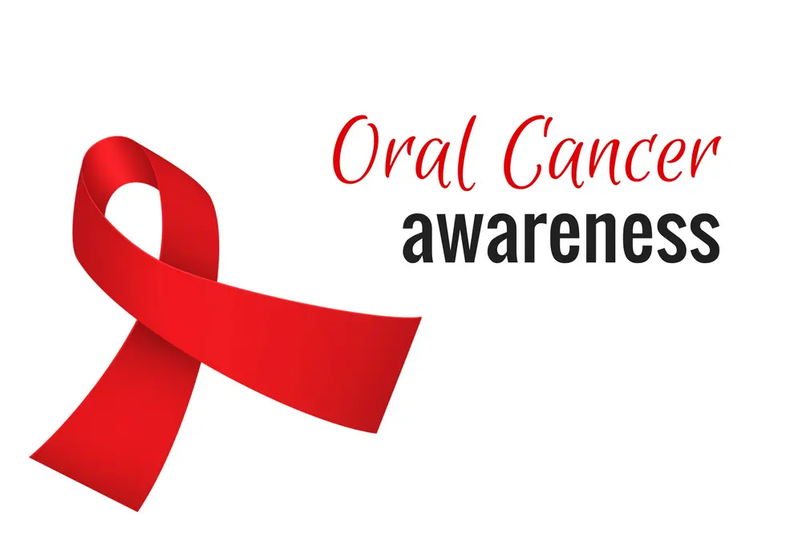

Introduction: Why April 2026 is a Milestone for Health
April isn’t just another month on the calendar—it’s globally recognized as Oral Cancer Awareness Month, making it one of the most critical times of the year for the dental community and patients alike. As we navigate through 2026, the landscape of healthcare is shifting. We are seeing a profound move toward preventive dentistry, driven by advanced diagnostics and a deeper understanding of systemic health.
In 2026, the risks associated with oral cancer are more varied than in previous decades. While traditional risks like tobacco and alcohol remain high, we are also seeing an increase in cases related to HPV and environmental factors. This comprehensive 3000+ word guide is designed to be your definitive resource for understanding oral cancer, recognizing its early signs, and taking the necessary steps to protect yourself and your loved ones.
What Is Oral Cancer Awareness Month?
Observed every April, Oral Cancer Awareness Month is a dedicated campaign aimed at educating the public about the dangers of oral cancer, its early symptoms, and the life-saving importance of regular screenings. Oral cancer refers to any cancerous growth that develops in the tissues of the mouth or upper throat.
The Areas of the Mouth at Risk
- The Tongue: Particularly the sides and the base where it meets the throat.
- The Gums: Often mistaken for common gum disease in early stages.
- Lips: Frequently affected by UV radiation from sun exposure.
- Inner Cheeks (Buccal Mucosa): Common site for tobacco-related lesions.
- Roof and Floor of the Mouth: The floor of the mouth is a high-risk area due to its thin lining.
Early detection doesn't just improve treatment outcomes—it saves lives. When caught in the early stages, oral cancer has a survival rate of over 80-90%. However, because many cases are not identified until they are advanced, the overall mortality rate remains higher than many other cancers. This is why awareness is our strongest weapon.
🛡️ The Prevention Path
5 MinutesA painless, non-invasive screening during your checkup. AI-assisted imaging and digital fluorescence find issues before they become symptoms.
- '; color: #15803d;">
- No Downtime
- Zero Pain
- Peace of Mind
⚠️ The Reaction Path
5 MonthsThe time required for advanced surgery, radiation, and rehabilitation if cancer is found in late stages. A fight for survival and quality of life.
- Extensive Surgery
- Radiation Fatigue
- Speech/Eating Rehab
Why April 2026 Is Different: The Evolving Risks
In 2026, dental professionals are emphasizing early screening more than ever before. Several factors make this year a unique point in our battle against oral diseases.
1. The Rising Curve of Global Cases
Despite increased awareness, cases of oral cancer are on the rise globally. In India, oral cancer remains one of the most common cancers, particularly among the male population. This is heavily influenced by the cultural prevalence of smokeless tobacco (gutka/khaini) and a rising trend in alcohol consumption. In 2026, we are also seeing more cases in younger, non-smoking demographics, often linked to the Human Papillomavirus (HPV).
2. The Integration of Artificial Intelligence (AI)
2026 marks the year when AI-assisted diagnostics have become mainstream in top-tier dental clinics like Vijaya Dental. AI software can analyze intraoral photos and X-rays with a precision that was impossible just five years ago. It flags microscopic changes in tissue color and bone density, acting as an "early warning system" for the dentist.
3. The Focus on "Healthspan"
Modern patients are no longer just looking to live longer; they want to live better. Oral health is now recognized as a primary pillar of "healthspan." We know that oral inflammation and cancer are linked to systemic conditions like heart disease and diabetes. Protecting your mouth is now understood as protecting your entire biological system.
Early Signs of Oral Cancer You Should Not Ignore
One of the biggest challenges with oral cancer is that it is often painless in its early stages. Many patients ignore small changes, thinking they are just "mouth ulcers" or "burns." In 2026, we urge you to follow the Two-Week Rule: if any of the following symptoms last for more than 14 days, you must see a dentist.
Watch Out For:
- Persistent Mouth Ulcers: A sore that does not heal despite using standard ointments.
- Red or White Patches: Known as Erythroplakia or Leukoplakia. These can be pre-cancerous lesions.
- Difficulty Swallowing or Chewing: A feeling like something is "stuck" in your throat.
- Lumps or Thickening: Any unusual mass in the cheek, tongue, or neck.
- Unexplained Bleeding: Bleeding in the mouth that has no obvious dental cause.
- Numbness: Loss of feeling in the tongue, lip, or chin area.
Risk Factors: What Drives Oral Cancer in 2026?
Understanding your risk level is the first step in prevention. While anyone can develop oral cancer, certain factors increase the probability significantly.
Tobacco: The Primary Culprit
Whether smoked (cigarettes, bidis) or smokeless (chewing tobacco, betel nut), tobacco remains the #1 cause of oral cancer. The carcinogens in tobacco cause genetic mutations in the cells of the mouth, leading to uncontrolled growth. In 2026, we are also seeing data on the long-term effects of Vaping, which, while marketed as "safer," contains chemicals that irritate and damage oral tissues.
Alcohol Consumption
Chronic alcohol use irritates the lining of the mouth. When combined with tobacco, the risk doesn't just double—it multiplies. Alcohol acts as a solvent, making the cells of the mouth more permeable to the carcinogens in tobacco.
The HPV Connection
The Human Papillomavirus (particularly HPV-16) is a major driver of oropharyngeal cancers (cancers at the back of the throat and base of the tongue). This type of cancer is often found in younger individuals who have never touched tobacco in their lives.
Sun Exposure (Lip Cancer)
People who work outdoors are at a higher risk of developing cancer on the lower lip due to UV radiation. In 2026, we recommend using lip balms with SPF 30+ as a standard part of your daily routine.
The Role of the Dentist in Early Detection
Your dentist is the first line of defense. During a routine checkup at Vijaya Dental, we do far more than just look for cavities. An oral cancer screening is a meticulous 5-minute protocol that could save your life.
What Happens During a Screening?
- Visual Inspection: We use high-intensity medical lights to look for any abnormalities in the soft tissues.
- Tactile Exam: We palpate (feel) your jaw, neck, and the floor of your mouth for any hidden lumps or lymph node enlargement.
- Digital Imaging: We may use intraoral cameras to document and track any suspicious areas over time.
- Advanced Tools (VELscope): In 2026, we use fluorescence technology. By shining a safe blue light, healthy tissue glows green, while abnormal tissue appears dark, allowing us to see what the human eye misses.
Preventive Dental Care Tips for 2026
Prevention is a daily choice. Here is your roadmap to maintaining a cancer-free mouth:
- Meticulous Oral Hygiene: Brush twice daily and floss every night. A clean mouth is less prone to chronic inflammation.
- The "Green" Diet: Load up on antioxidants found in green leafy vegetables, carrots, and berries. These help repair cellular damage.
- Hydration: A dry mouth is more vulnerable to irritation. Drink plenty of water to maintain your saliva's protective barrier.
- Quit Tobacco: 2026 offers more cessation aids than ever before, from nicotine replacements to behavioral apps. It's never too late to stop.
- Bi-Annual Checkups: Don't wait for pain. See us every 6 months for a professional cleaning and screening.
The Cost of Waiting: An Economic Perspective
While we avoid specific currency amounts, the "price" of waiting is immense. Preventive care—including a 5-minute screening—is often covered 100% by dental insurance in 2026. Conversely, the "Reaction Path" involving surgery and radiation is thousands of times more expensive and involves months of lost income. Investing in prevention is the smartest financial decision you can make for your health.
Why Visit Vijaya Dental This April?
At Vijaya Dental & Implant Center, we take Oral Cancer Awareness Month seriously. Our clinic in Dammaiguda is equipped with the latest 2026 diagnostic technology. We offer a safe, compassionate, and non-judgmental environment for you to get screened. Whether you are a smoker looking to quit or a health-conscious individual looking for peace of mind, we are here to support you.
Conclusion: Your Timeline, Your Choice
April 2026 is a reminder that you are the guardian of your own health. Oral cancer is a formidable opponent, but it is one that can be defeated through awareness and early action. By choosing to spend 5 minutes on a screening this month, you are choosing a future of health, laughter, and confidence.
Take the first step. Book your April Preventive Screening today.
❓ Frequently Asked Questions (FAQ)
Not at all. It is a completely non-invasive visual and tactile exam. It takes about 5 minutes and is usually performed during your regular checkup.
In 2026, we are seeing more cases in younger adults due to HPV. No matter your age or habits, a yearly screening is the safest protocol.
A dentist can identify "suspicious" areas. If an area looks abnormal and doesn't heal within 2 weeks, we may recommend a biopsy—the only definitive way to diagnose cancer.
While research is ongoing, vaping exposes oral tissues to heat and chemicals that can cause inflammation and DNA damage, both of which are risk factors for cancer.
Yes, especially when detected early (Stage I or II). The survival rates drop significantly as the cancer advances to Stage III or IV, which is why early detection is everything.
Generally, red patches (erythroplakia) have a higher chance of being cancerous or pre-cancerous than white patches (leukoplakia), but both should be examined immediately by a professional.
Ready to Prioritize Your Health?
Don't leave your health to chance. Book your expert oral cancer screening at Vijaya Dental today.
📅 Book Appointment NowOr call us directly: 91776 17437